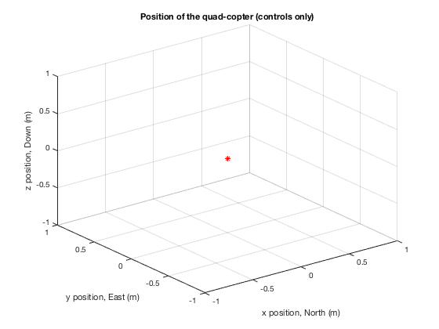
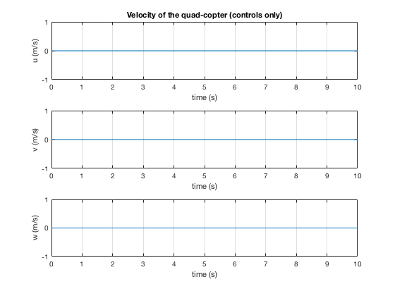
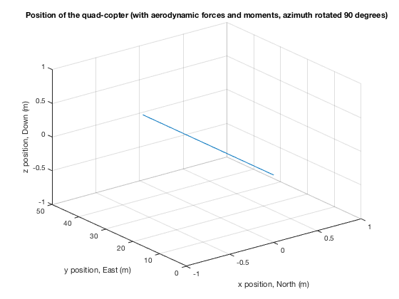

Contents
ASEN 3128 - Assignment 02 - Main
Simulation of a quad-copter, including attitude dynamics and kinematics
Author: Margaux McFarland
Collaborators:
Date: 9/19/19
clc
clear all
close all
1
ans =
1
Part 7 - determine trim thrust for the rotors for steady hovering flight
g_b = -9.81;
m = 0.068;
f1 = (-g_b*m)/4;
f2 = (-g_b*m)/4;
f3 = (-g_b*m)/4;
f4 = (-g_b*m)/4;
initials = [0 0 0 0 0 0 0 0 0 0 0 0];
t_span = [0 10];
[t, state_vec] = ode45(@(t,state_vec) g_fun(t,state_vec, f1, f2, f3, f4),t_span,initials);
x = state_vec(:, 1);
y = state_vec(:, 2);
z = state_vec(:, 3);
u = state_vec(:, 7);
v = state_vec(:, 8);
w = state_vec(:, 9);
figure(1);
plot3(x, y, z, 'r*');
grid on
xlabel("x position, North (m)");
ylabel("y position, East (m)");
zlabel("z position, Down (m)");
title("Position of the quad-copter (controls only)");
figure(2);
subplot(3, 1, 1);
plot(t, u);
title("Velocity of the quad-copter (controls only)");
grid on
xlabel("time (s)");
ylabel("u (m/s)");
subplot(3, 1, 2);
plot(t, v);
grid on
xlabel("time (s)");
ylabel("v (m/s)");
subplot(3, 1, 3);
plot(t, w);
grid on
xlabel("time (s)");
ylabel("w (m/s)");
 
Part 8 - introduce drag, change azimuth angle
v = 5;
n = 1e-3;
d_east = -n*v^2;
weight = g_b*m;
phi = atan(d_east/weight);
f1 = -weight/(4*cos(phi));
f2 = -weight/(4*cos(phi));
f3 = -weight/(4*cos(phi));
f4 = -weight/(4*cos(phi));
initials2 = [0 0 0 0 0 phi 0 5 0 0 0 0];
[t2, state_vec2] = ode45(@(t2,state_vec2) g_fun2(t2,state_vec2, f1, f2, f3, f4),t_span,initials2);
x2 = state_vec2(:, 1);
y2 = state_vec2(:, 2);
z2 = state_vec2(:, 3);
figure(3)
plot3(x2, y2, z2);
grid on
xlabel("x position, North (m)");
ylabel("y position, East (m)");
zlabel("z position, Down (m)");
title("Position of the quad-copter (with aerodynamic forces and moments)");
f1 = -weight/(4);
f2 = -weight/(4);
f3 = -weight/(4);
f4 = -weight/(4);
initials3 = [0 0 0 90 0 0 0 5 0 0 0 0];
[t3, state_vec3] = ode45(@(t3,state_vec3) g_fun2(t3,state_vec3, f1, f2, f3, f4),t_span,initials3);
x3 = state_vec3(:, 1);
y3 = state_vec3(:, 2);
z3 = state_vec3(:, 3);
figure(4)
plot3(x3, y3, z3);
grid on
xlabel("x position, North (m)");
ylabel("y position, East (m)");
zlabel("z position, Down (m)");
title("Position of the quad-copter (with aerodynamic forces and moments, azimuth rotated 90 degrees)");

Part 9 - plot translation and rotation over time for steady hover
f1 = (-g_b*m)/4;
f2 = (-g_b*m)/4;
f3 = (-g_b*m)/4;
f4 = (-g_b*m)/4;
initials4 = [0 0 0 0 0 0 0 0 0 0 0 0];
t_span = [0 10];
[t4, state_vec4] = ode45(@(t4,state_vec4) g_fun(t4,state_vec4, f1, f2, f3, f4),t_span,initials4);
x4 = state_vec4(:, 1);
y4 = state_vec4(:, 2);
z4 = state_vec4(:, 3);
xi4 = state_vec(:, 4);
theta4 = state_vec(:, 5);
phi4 = state_vec(:, 6);
figure(5);
subplot(3, 1, 1);
plot(t4, x4);
title("Translation over time for steady hover");
xlabel("time (s)");
ylabel("x (m)");
subplot(3, 1, 2);
plot(t4, y4);
xlabel("time (s)");
ylabel("y (m)");
subplot(3, 1, 3);
plot(t4, z4);
xlabel("time (s)");
ylabel("z (m)");
figure(6);
subplot(3, 1, 1);
plot(t4, xi4);
title("Rotation over time for steady hover");
xlabel("time (s)");
ylabel("azimuth angle (radians)");
subplot(3, 1, 2);
plot(t4, theta4);
xlabel("time (s)");
ylabel("elevation angle (radians)");
subplot(3, 1, 3);
plot(t4, phi4);
xlabel("time (s)");
ylabel("bank angle (radians)");
load RSdata_White_1433.mat
times=rt_estim.time(:);
xdata=rt_estim.signals.values(:,1);
ydata=rt_estim.signals.values(:,2);
zdata=rt_estim.signals.values(:,3);
figure(7);
plot3(xdata, ydata, zdata);
title("Trajectory of PARROT spider");
xlabel("x (m)");
ylabel("y (m)");
zlabel("z (m)");
grid on
other functions
function ddt = g_fun(t,state_vec, f1, f2, f3, f4)
ode function for part 7 (no aerodynamic forces)
x = state_vec(1, 1);
y = state_vec(2, 1);
z = state_vec(3, 1);
xi = state_vec(4, 1);
theta = state_vec(5, 1);
phi = state_vec(6, 1);
u = state_vec(7, 1);
v = state_vec(8, 1);
w = state_vec(9, 1);
p = state_vec(10, 1);
q = state_vec(11, 1);
r = state_vec(12, 1);
m = 0.068;
r = 0.06;
Ix = 6.8e-5;
Iy = 9.2e-5;
Iz = 1.35e-4;
g_b = [0; 0; -9.81];
k = 0.0024;
Xc = 0;
Yc = 0;
Zc = f1 + f2 + f3 + f4;
A_c = [Xc; Yc; Zc];
f_b = m.*g_b + A_c;
Lc = (r/sqrt(2))*(f1 + f2 - f3 - f4);
Mc = (r/sqrt(2))*(-f1 + f2 + f3 - f4);
Nc = k*(f1 - f2 + f3 - f4);
G_cb = [Lc; Mc; Nc];
G_b = G_cb;
du = f_b(1);
dv = f_b(2);
dw = f_b(3);
dp = -((q*Iz*r) - (r*Iy*q)) + G_b(1);
dq = ((p*Iz*r) - (r*Ix*p)) + G_b(2);
dr = -((p*Iy*q) - (q*Ix*p)) + G_b(3);
ddt = [u; v; w; p; q; r; du; dv; dw; dp; dq; dr];
end
function ddt = g_fun2(t,state_vec, f1, f2, f3, f4)
ode function for part 8 (adding aerodynamic forces)
x = state_vec(1, 1);
y = state_vec(2, 1);
z = state_vec(3, 1);
xi = state_vec(4, 1);
theta = state_vec(5, 1);
phi = state_vec(6, 1);
u = state_vec(7, 1);
v = state_vec(8, 1);
w = state_vec(9, 1);
p = state_vec(10, 1);
q = state_vec(11, 1);
r = state_vec(12, 1);
m = 0.068;
rad = 0.06;
Ix = 6.8e-5;
Iy = 9.2e-5;
Iz = 1.35e-4;
g_b = [0; 0; -9.81];
k = 0.0024;
Xc = (f1 + f2 + f3 + f4)*-sin(theta);
Yc = (f1 + f2 + f3 + f4)*sin(phi)*cos(theta);
Zc = (f1 + f2 + f3 + f4)*(cos(theta)*cos(phi));
n = 1e-3;
Xa = -n*sqrt(u^2 + v^2 + w^2)*u;
Ya = -n*sqrt(u^2 + v^2 + w^2)*v;
Za = -n*sqrt(u^2 + v^2 + w^2)*w;
A_a = [Xa; Ya; Za];
A_c = [Xc; Yc; Zc];
f_b = m.*g_b + A_a + A_c;
Lc = (rad/sqrt(2))*(f1 + f2 - f3 - f4);
Mc = (rad/sqrt(2))*(-f1 + f2 + f3 - f4);
Nc = k*(f1 - f2 + f3 - f4);
alpha = 2e-6;
La = -alpha*sqrt(p^2 + q^2 + r^2)*p;
Ma = -alpha*sqrt(p^2 + q^2 + r^2)*q;
Na = -alpha*sqrt(p^2 + q^2 + r^2)*r;
G_ab = [La; Ma; Na];
G_cb = [Lc; Mc; Nc];
G_b = G_ab + G_cb;
du = f_b(1);
dv = f_b(2);
dw = f_b(3);
dp = -((q*Iz*r) - (r*Iy*q)) + G_b(1);
dq = ((p*Iz*r) - (r*Ix*p)) + G_b(2);
dr = -((p*Iy*q) - (q*Ix*p)) + G_b(3);
ddt = [u; v; w; p; q; r; du; dv; dw; dp; dq; dr];
end